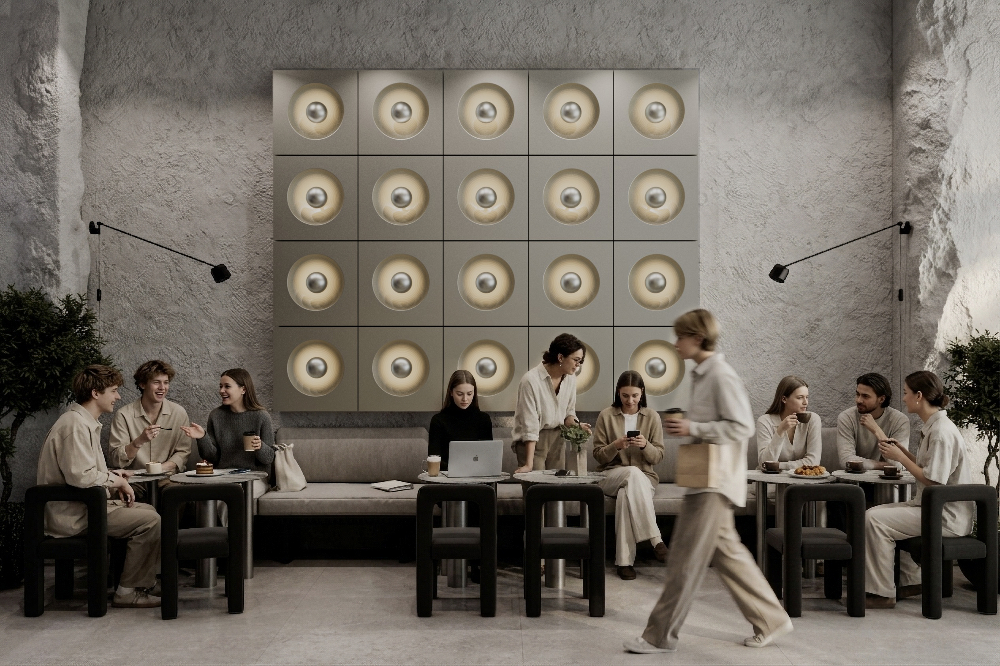
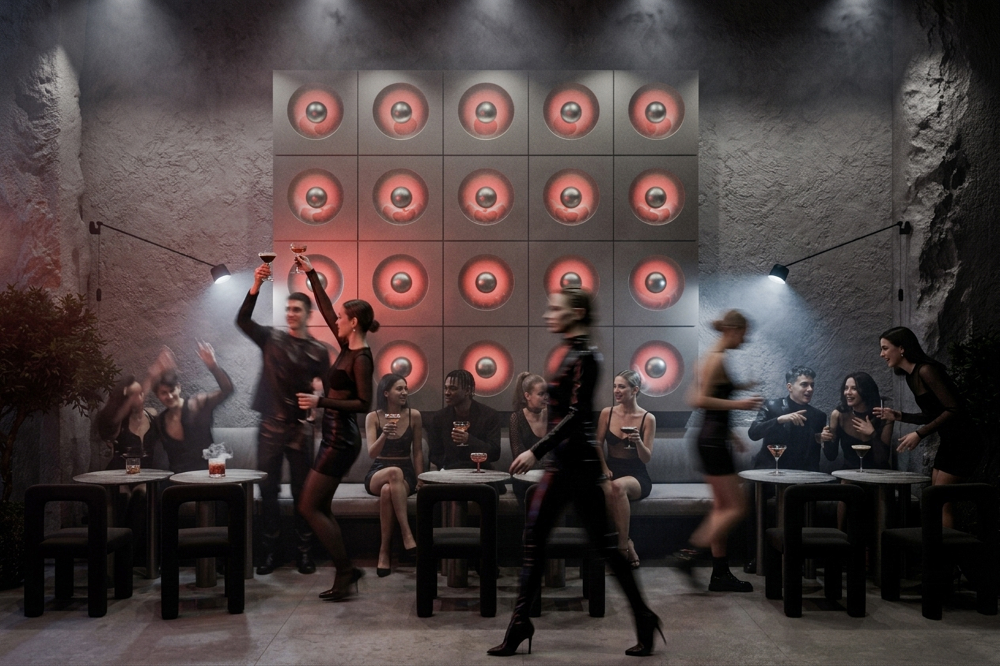

Hover to experience day / night
01
OmmO
Day Cafe / Electronic Music Space - 2024
A café by day and an electronic music venue after sunset.


Hover to experience day / night
Day Cafe / Electronic Music Space - 2024
A café by day and an electronic music venue after sunset.

Boutique Hotel · Batumi, Georgia
A hospitality concept exploring color, light, and atmosphere.

Beauty & Wellness Space - 2026
Beauty and wellness interiors designed through atmosphere and ritual.

Fashion Retail / Lounge Space - 2026
Contemporary fashion retail shaped through hospitality.